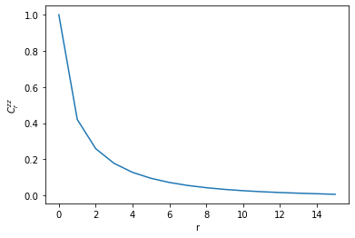

Matrix product state representation for ground states
$ \require{physics} \def\bm{\boldsymbol} $
Introduction
Clearly, God did not conceive the universe as a point because God would not be able to take the outer product of two points to obtain vectors. So in the beginning, there were at least two vectors, and God took the outer product to make higher order tensors, the inner product to make lower order tensors: these were the binary operators on tensors. God defined these tensors over a field and also used the transpose and inverse. We believe God may have saved us because God invented index notation so that any of this could make sense. Therefore tensors, their fields, their classes, their algebras, and their calculus is the only way that it is convenient to express the geometry of the universe.
Sometimes smart people find ways to represent large tensors by smaller tensors, and this assignment is originated in this observation. The goal is to rewrite a tensor of dimension $d^L$ which describes the state of a qu$d$it chain of known $L$ength as a matrix product. We do so using the SVD and Schmidt decomposition techniques explored earlier.
Other projects seem pretty useful to look into for helpful resources and software. This is a useful paper cited in the assignment on the subject.
MPS representation
One asks how you actually do this task efficiently, which comes down to knowing
how to represent the MPS wavefunction in memory.
Choose a positive integer value for $d$ and $L$.
The representation is of the form
$$
\psi_{\sigma_1, \dots, \sigma_L} =
\sum_{\alpha_0, \dots, \alpha_L}
\left( \prod_{i=0}^{L-1} A_{\alpha_i \alpha_{i+1}}^{\sigma_{i+1}} \right)
$$
where
\begin{align}
\dim(\alpha_i) \leq
\begin{cases}
d^i
&\qq{i $\leq$ L/2}
\\
d^{L-i}
&\qq{i > L/2}
\end{cases}
.
\end{align}
The form of this dimensionality is due to the way the mps representation is
constructed: a tensor is reshaped and has its SVD taken many times,
each new time after another reshaping and SVD.
Essentially these dimensions are the maximal ranks of a matrix as it is reshaped
from $(1, d^L)$ to $(d^L, 1)$ when exchanging rows to columns $d$ at a time.
Now an approximation scheme for MPS is a map:
\begin{align}
r(i) : {i} \to {1, \dots, \max(1, \min(d r(i-1), \dim(\alpha_i))}
\end{align}
with $r(0) = 1$
that specifies the number of rows retained at each bond index.
This is a finite but large function space, and of the many approximation schemes
it often makes sense to choose a simple one, such as
$r(i) = \min(\chi, \dim(\alpha_i))$ for constant $\chi$.
Scaling
The scaling of storage requirements as a function of the approximation scheme can be calculated succinctly as $d \sum_i r(i) r(i+1)$. Taking $r=\dim(\alpha_i)$ makes for an inefficient full representation of the because of the $d^L$ scaling for the individual matrices. For what truncation ranks $r$ is MPS an efficient storage scheme? We will test the accuracy of the scheme later.
Program
- $d=2, r=\chi=1$ ($r=1$ is a special case where the storage format can be optimized)
- For $h \in { 1, 5/4 }$
- Take the ground state in the open system at large L
- Compute the MPS approximation of the wavefunction, varying the bond length $k$
- Calculate the actual reduction in storage space (np.size)
- Contract the indices of the tensors of MPS to obtain exponentially large $\ket{\tilde{\psi}_{gs} (k)}$.
- Compute the overlap $\braket{\tilde{\psi}_{gs} (k)}{\psi_{gs}}$
Efficient calculations with MPS
- Use MPS to calculate $E(k) = \ev{H}{\tilde{\psi}_{gs} (k)} / \braket{\tilde{\psi}_{gs} (k)}$
- Compute the same correlation functions as in Assignment 1 at both values of the order parameter and study the convergence in $k$.
from itertools import product
import numpy as np
import pandas as pd
import scipy.sparse.linalg as sla
import matplotlib.pyplot as plt
%matplotlib inline
from ph121c_lxvm import basis, tfim, tests, tensor, data
%%time
measurements = {
'bc': [],
'L' : [],
'h' : [],
'k' : [],
'N' : [],
'nm': [],
'E' : [],
'Ek': [],
'ip': [],
'Cz': [],
'Mz': [],
}
for oper_params in tests.tfim_sweep(
L = [16],
h = [1, 1.2],
bc= ['o'],
):
job = dict(
oper=tfim.z.H_sparse,
oper_params=oper_params,
solver=sla.eigsh,
solver_params={
'k' : 6,
'which' : 'BE',
},
)
evals, evecs = data.jobs.obtain(**job)
# construct local operators
sx = np.array([[0, 1], [1, 0]], dtype='float64')
sz = np.array([[1, 0], [0, -1]], dtype='float64')
C = tensor.mpo(oper_params['L'], d=2)
C[0] = sz
C[oper_params['L'] // 2] = sz
# Construct operators which are sums of local operators
# (sums of mpos are not always mpos)
H = []
M = []
# Hamiltonian
## z terms
for i in range(oper_params['L'] - 1 + (oper_params['bc'] == 'c')):
H.append(tensor.mpo(oper_params['L'], d=2))
H[-1][i] = -sz
H[-1][(i+1) % oper_params['L']] = sz
## x terms
for i in range(oper_params['L']):
H.append(tensor.mpo(oper_params['L'], d=2))
H[-1][i] = -oper_params['h'] * sx
# Magnetization
for i, j in product(np.arange(oper_params['L']), repeat=2):
M.append(tensor.mpo(oper_params['L'], d=2))
M[-1][i] = sz / (oper_params['L'] ** 2)
M[-1][j] = sz
# Do the MPS
chi_max = 20
rank = tensor.bond_rank(chi_max, oper_params['L'], d=2)
A = tensor.mps(evecs[:, 0], rank, L=oper_params['L'], d=2)
for i in range(chi_max - 1):
rank = tensor.bond_rank(chi_max - i, oper_params['L'], d=2)
A.lower_rank(rank)
measurements['bc'].append(
oper_params['bc']
)
measurements['L'].append(
oper_params['L']
)
measurements['h'].append(
oper_params['h']
)
measurements['k'].append(
chi_max - i
)
measurements['N'].append(
A.size()
)
measurements['nm'].append(
A.inner(A)
)
measurements['E'].append(
evals[0]
)
measurements['ip'].append(
np.inner(A.v, A.contract_bonds()) / np.sqrt(measurements['nm'][-1])
)
measurements['Ek'].append(
sum(A.expval(e) for e in H) / measurements['nm'][-1]
)
measurements['Cz'].append(
A.expval(C) / measurements['nm'][-1]
)
measurements['Mz'].append(
sum(A.expval(e) for e in M) / measurements['nm'][-1]
)
df = pd.DataFrame(measurements)
CPU times: user 8min 5s, sys: 1.24 s, total: 8min 6s
Wall time: 7min 25s
%%capture plot
# make the k saturation plots
myplots = ['Ek', 'N', 'ip', 'Cz', 'Mz']
ncol = 2
nrow = len(myplots) // 2 + len(myplots) % 2
fig, axes = plt.subplots(nrow, ncol)
for i, row in enumerate(axes):
for j, ax in enumerate(row):
if (ncol * i + j) < len(myplots):
for h in [1, 1.2]:
ax.plot(
df[df.h == h]['k'].values,
df[df.h == h][myplots[i * ncol + j]].values,
label='h=' + str(h),
)
ax.set_xlabel('k')
ax.set_ylabel(myplots[i * ncol + j])
handles, labels = ax.get_legend_handles_labels()
else:
ax.set_axis_off()
ax.legend(handles, labels, loc='center')
fig.tight_layout()
%%capture corr
# Make the long-range correlation plots
rank = tensor.bond_rank(chi_max, oper_params['L'], d=2)
A = tensor.mps(evecs[:, 0], rank, L=oper_params['L'], d=2)
C = np.empty(oper_params['L'], dtype='object')
x = [0]
y = [1]
C[0] = sz
for i in range(1, oper_params['L']):
C[i] = sz
x.append(i)
y.append(A.expval(C) / measurements['nm'][-1])
C[i] = None
fig, ax = plt.subplots()
ax.plot(x, y)
ax.set_xlabel('r')
ax.set_ylabel('$C^{zz}_r$')
plt.show()
Results
Accuracy
I first wanted to show some of the numerical results in decimal form so that I have an opportunity to explain my abbreviations, and to show that the calculations are relatively accurate. The table below shows how several calculated quanties vary as a function of $k$, The quantities of interest are $N$, the actual number of coefficients stored in the mps approximation, $E_k$, the MPS expectation value of the energy of the ground state MPS wavefunction, $nm$, the norm of the wavefunction, $ip$, the overlap of the ground state vector with the MPS wavefunction after contracting its virtual indices, $C^{zz}$, the two-point spin correlation function measured at a distance of $L/2$, and $M^{zz}$, which is the normalized expected value of the magnetization of the chain. These values are:
df.tail()
| bc | L | h | k | N | nm | E | Ek | ip | Cz | Mz | |
|---|---|---|---|---|---|---|---|---|---|---|---|
| 33 | o | 16 | 1.2 | 6 | 856 | 1.000000 | -22.464998 | -22.464998 | 1.000000 | 0.042561 | 0.151028 |
| 34 | o | 16 | 1.2 | 5 | 620 | 1.000000 | -22.464998 | -22.464995 | 1.000000 | 0.042531 | 0.151009 |
| 35 | o | 16 | 1.2 | 4 | 424 | 0.999995 | -22.464998 | -22.464974 | 0.999997 | 0.042135 | 0.150831 |
| 36 | o | 16 | 1.2 | 3 | 248 | 0.999784 | -22.464998 | -22.463383 | 0.999892 | 0.039861 | 0.149105 |
| 37 | o | 16 | 1.2 | 2 | 120 | 0.997312 | -22.464998 | -22.453767 | 0.998689 | 0.024050 | 0.139941 |
When $k=2$, the MPS values are correct to within 0.1% of the original, such as by comparing $E$, the exact diagonalization energy, with $E_k$, or the norm with the expected value of 1. However, the values appear to saturate as $k$ grows and already at $k=4$ it appears though some of the quantites are the same as $k=5$ with the 8 or so digits we can see. In particular, we see that the MPS ground state energy decreases towards the minimal exact value as the quality of approximation improves.
Saturation of bond dimension
We can visualize some of these values to get a wider look at the dependence on $k$.
plot.show()
It appears that the values have all saturated long before reaching the maximum bond dimension of $k=20$ – already it seems that at $k=5$ there won’t be noticeable changes in any quantity, except for $N$ which is the rapidly-growing storage requirement (compare this to $2^{16} = 65,536$ coefficients in the dense vector representation of the wavefunction). Across two different values of $h$, at the critical value and in the paramagnetic phase (the paramagnetic effect is stronger for a larger system size such as this one, $L=16$), we observe the same physics as in the first assignment. The values of the correlation functions are two to three times higher for $h=1$ than in the transverse-field dominated $h=1.2$ regime. In addition, due to this value of $h$, the ground state energy is lower for larger $h$, as observed last time, due to the influence of the aligning effect of the field.
Verifying long-range correlations
Another thing to verify is not only $C^{zz}$ at the half-way point in the chain, but correlation as a function of all distances at the chain. I repeated this measurement from the first assignment in the MPS representation, using the reference spin as the left boundary and measuring the $z$ spin correlation with the rest of the chain. The plot below, at $L=16$ and $h=1.2$ and open boundary conditions, shows how the correlations decay exponentially with the distance due to the strong effect of the transverse terms in the TFIM Hamiltonian in the paramagnetic phase.
corr.show()

Discussion
We have implemented a functional MPS representation that allows for a massive reduction in storage space ($k=5$ corresponds to 620 coefficients versus 65,536 in the dense wavefunction at $L=16$). This was possible because the Hamiltonian of this system is 2-local and with open boundary conditions, which curb the entanglement entropy of the system so that we can truncate the smallest Schmidt values to good approximation at each step in the MPS representation. In particular, this is true for very few states, those with an area law for the entanglement entropy, such as the ground state and most excited state.
My implementation of mps is practical and has been tested for qudit systems
for $d=3, 4$ in the ph121c_lxvm.tests.tensor module.
Ultimately, if we consider translation invariant systems, we should test
that the order in which we do MPS in the chain does not affect the results.
I think with my current code on permutations in the ph121c_lxvm.basis module
makes this possible by adding one line of code that I have commented in the
__init__ method for the tensor.mps class.
However, that permutation code only works for $d=2$, so I’d have to put some
thought into what algorithm can be used for larger $d$ because we lose the
convenience of binary to some extent.
Testing the ceiling
I will do one last test to see the feasibility/runtime of the MPS scheme at $L=20$ with the bond dimension of $k=20$, while also calculating the expected energy of the state, at all truncations of $k$ from 1 to 5. The idea is to see whether the larger system size poses difficulties on the runtime or the accuracy of the approximation scheme.
%%time
for oper_params in tests.tfim_sweep(
L = [20],
h = [1],
bc= ['o'],
):
job = dict(
oper=tfim.z.H_sparse,
oper_params=oper_params,
solver=sla.eigsh,
solver_params={
'k' : 6,
'which' : 'BE',
},
)
evals, evecs = data.jobs.obtain(**job)
# construct local operators
sx = np.array([[0, 1], [1, 0]], dtype='float64')
sz = np.array([[1, 0], [0, -1]], dtype='float64')
# Construct operators which are sums of local operators
# (sums of mpos are not always mpos)
H = []
# Hamiltonian
## z terms
for i in range(oper_params['L'] - 1 + (oper_params['bc'] == 'c')):
H.append(tensor.mpo(oper_params['L'], d=2))
H[-1][i] = -sz
H[-1][(i+1) % oper_params['L']] = sz
## x terms
for i in range(oper_params['L']):
H.append(tensor.mpo(oper_params['L'], d=2))
H[-1][i] = -oper_params['h'] * sx
# Do the MPS
chi_max = 20
rank = tensor.bond_rank(chi_max, oper_params['L'], d=2)
A = tensor.mps(evecs[:, 0], rank, L=oper_params['L'], d=2)
print(
'L=', oper_params['L'],
'h=', oper_params['h'],
'bc=', oper_params['bc'],
)
print(f'GS energy (ED, N={A.v.size}):', evals[0])
for i in range(chi_max - 1):
rank = tensor.bond_rank(chi_max - i, oper_params['L'], d=2)
A.lower_rank(rank)
print(
f'GS energy (k={chi_max - i}, N={A.size()}):',
sum(A.expval(e) for e in H) / A.inner(A),
)
L= 20 h= 1 bc= o
GS energy (ED, N=1048576): -25.107797111623707
GS energy (k=20, N=9960): -25.107797111623768
GS energy (k=19, N=9116): -25.10779711162373
GS energy (k=18, N=8312): -25.10779711162367
GS energy (k=17, N=7548): -25.107797111623395
GS energy (k=16, N=6824): -25.107797111622258
GS energy (k=15, N=6048): -25.10779711162034
GS energy (k=14, N=5320): -25.10779711161205
GS energy (k=13, N=4640): -25.107797111536886
GS energy (k=12, N=4008): -25.10779711113673
GS energy (k=11, N=3424): -25.10779711084674
GS energy (k=10, N=2888): -25.107797109071836
GS energy (k=9, N=2400): -25.107796991932208
GS energy (k=8, N=1960): -25.10779672401916
GS energy (k=7, N=1524): -25.107796334675882
GS energy (k=6, N=1144): -25.10779522504112
GS energy (k=5, N=820): -25.107721356074386
GS energy (k=4, N=552): -25.107495385020844
GS energy (k=3, N=320): -25.088852485114337
GS energy (k=2, N=152): -25.037706037740858
CPU times: user 5.02 s, sys: 35.7 ms, total: 5.06 s
Wall time: 3.15 s
Wow, that series of operations is really trivial, and the compression ratio is really fantastic! In contrast, what takes a long time is contracting the virtual indices in all $2^L$ possible ways, even when $k=2$ (as it is here):
%time np.inner(A.v, A.contract_bonds())
CPU times: user 3min 21s, sys: 1.87 s, total: 3min 23s
Wall time: 3min 20s
0.9799687081812974
I was wondering why the first program took so long – clearly because of this exponentially-scaling operation to calculate the overlap, whereas the polynomial tensor network contractions were much faster. The overlap is within 2% at $k=2$, which is amazing, but to actually calculate this on a regular basis would be unfeasible … unless I write it in Fortran :). For fun, what happens with $k=1$? This would be the case of classical physics, where each spin is assigned a probability of being up or down, and the probability of the whole system being in a given spin configuration is just the product of probabilities at each site.
rank = tensor.bond_rank(1, oper_params['L'], d=2)
A.lower_rank(rank)
%time np.inner(A.v, A.contract_bonds())
CPU times: user 3min 3s, sys: 1.59 s, total: 3min 4s
Wall time: 3min 2s
0.16368954570087002
Not a good approximation anymore! In this case, the storage requirement is just $2L$:
A.size()
40